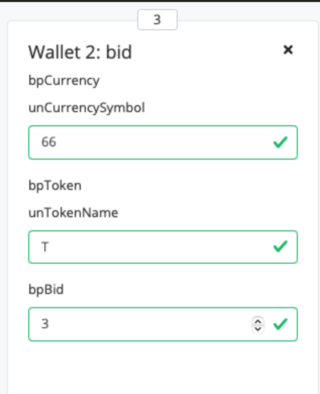

Plutus Pioneer创新计划旨在在Cardano生态系统内招募和培训开发人员，以便在今年晚些时候将Plutus部署到Cardano主网时为他们做好充分的准备。本次课程为期10周，每周2发布新的课程，该课程涵盖: 函数与数据类型/类型类/Monads/Template Haskell/Plutus游乐场/EUTXO模型/链上与链下代码/Minting策略/状态机/Plutus应用框架/案例研究与实践练习等。于此同时，为了奖励参与者为参加此课程而付出的努力，并对完成整个计划并取得成功的Pioneers进行认证。这些Plutus Pioneer证书将被表示为不可替代的令牌(在测试网上)，并被Plutus合同锁定。Pioneers可以通过构建适当的交易来解锁其个人令牌来证明自己的知识和资格。
环境配置
这里介绍macos环境，windows环境可以使用wsl-linux.
nix
1 | 安装nix |
课程01
1 | 例如: 安装在用户主目录的haskell文件夹下 |
启动模拟器
完成上述步骤后，可以启动模拟器:
1 | 新开一个终端，启动服务器 |
第一节课
启动模拟器后，将默认代码删除，然后将~/haskell/plutus-pioneer-program/code/week01/src/Week01/EnglishAuction.hs文件的内容拷贝进来，并将模块导入的相关代码删除:1
2
3
4
5
6
7
8
9
10
11
12
13
14-- 删除如下代码
module Week01.EnglishAuction
( Auction (..)
, StartParams (..), BidParams (..), CloseParams (..)
, AuctionSchema
, start, bid, close
, endpoints
, schemas
, ensureKnownCurrencies
, printJson
, printSchemas
, registeredKnownCurrencies
, stage
) where
点击compile按钮，编译合同代码。
点击simulate按钮，将会模拟该合同。
课程01的合同代码逻辑为:
钱包1准备拍卖NFT令牌(1T)，钱包2和钱包3将竞标(通过添加钱包按钮可以增加更多钱包).
每个钱包都有bid(出价)，close(关闭)，start(启动)三个按钮。
bid-> 出价xlovelacesstart-> 使用getSlot(竞价持续多长时间)和spMinBid(最小lovelaces限制)来启动竞标过程close-> 关闭竞标，将NFT令牌给到最高出价者
默认每个钱包都有10个lovelaces和10个T, 钱包1将会发起拍卖，因此我们将钱包1的T改为1，钱包2和钱包3的T改为0:
拍卖流程
- 因为钱包1将会拍卖自己的令牌
T，因此我们需要为钱包1增加一个start动作(点击钱包1的start按钮)，并设置相应参数:
- getSlot: 20(竞标将在
slot20上close) - spMinBid: 3(至少需要3个
lovelaces) - spCurrency: 66(
T令牌的货币符号, 将在以后的课程中进行解释) - spToken:
T(令牌)
- 然后我们需要添加一个
wait动作(1slot), 这将使所有action有时间执行。
- 现在钱包2将出价3个
lovelaces来开始竞标。
点击钱包2上的bid按钮，然后使用以下参数更新操作:
- spCurrency: 66(
T令牌的货币符号, 将在以后的课程中进行解释) - spToken:
T(令牌) - bpBid: 3(出价多少个
lovelaces)

然后再次增加一个
wait动作(1slot)然后钱包3开始出价(点击钱包3上的
bid按钮)(使用5个lovelaces):然后我们再次增加一个
wait动作，选择wait until,然后填写20 slot(注意: 在第1步时，我们已设置在20slot时close竞标过程)然后，我们还需要为钱包1增加一个
close动作，来确定最终投标顺序.最后，在增加一个
wait动作(1slot)
评估
完成如上过程后，我们需要点击Evaluate按钮来完成评估。
你将会看到如下各个slots内容:
- Slot 0, Tx 0
Genesis(创始)slot, 在这将会设置所有内容: 钱包1有1个T和10个lovelaces, 钱包2和钱包3分别有10个lovelaces
- Slot 1, Tx 0
start动作，这是钱包1将它的1T转移到合同中的地方
- Slot 2, Tx 0
- 钱包2出价3个
lovelaces, 此时合同中有1个T和3个lovelaces.
- 钱包2出价3个
- Slot 3, Tx 0
- 钱包3出价5个
lovelaces, 此时合同中有1个T和5个lovelaces, 钱包2的3个lovelaces已被退回
- 钱包3出价5个
- Slot 20, Tx 0
- 钱包3赢得最终的竞标，得到了1个
T, 钱包1得到了5个lovelaces. 此时合同中没有任何东西，它已经将所有东西交给了其合法所有者.
- 钱包3赢得最终的竞标，得到了1个
检查Final balances，可以看到最终结果，钱包3现在有1个T:
其他
Cardano的时间划分为了几个epoch(纪元)，然后每个epoch再次被划分为slots(插槽),slot是可以创建block(块)的较短时间段,Ouroboros股权证明算法，为每个slot随机分配一个stake pool(股份池), 然后，所谓的slot leader为此slot创建相应的block, 在创建epoch之前，已经进行了slot leader的选举。每个slot通常都包含一个block，但是如果所选的池性能不好，则可能不时有一个空slot。对于Cardano协议，空slot是可以的，但是大多数block必须在一个epoch期间生成，以保持有保证的安全性。每20秒有一个slot，每个epoch包含21600个slots。因此，每5天就有一个新epoch。

/表示空slot
Cardano的设计方式是可以并行运行多个epoch。如果假设单线程性能为每秒X个事务，并且并行运行另一个epoch，那么现在的性能是原来每秒事务量的两倍。如果并行运行另一个epoch，则性能将变为每秒原始事务量的3倍，依此类推。您可以并行运行多达N个epoch，无论网络的需求是什么。N仅受网络吞吐量的限制。这使得Cardano具有高度的可扩展性.